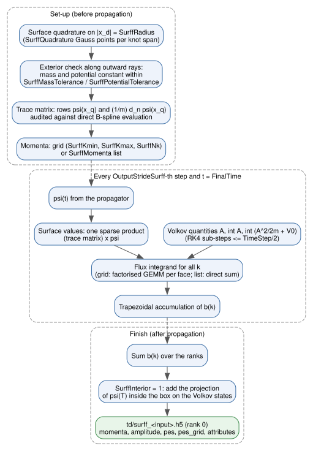
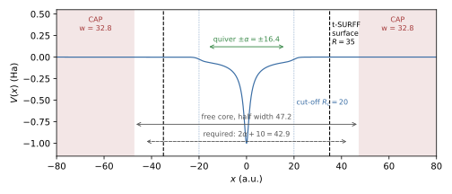

<!DOCTYPE html>
<html class="writer-html5" lang="en" data-content_root="./">
<head>
  <meta charset="utf-8" /><meta name="viewport" content="width=device-width, initial-scale=1" />

  <meta name="viewport" content="width=device-width, initial-scale=1.0" />
  <title>Photoelectron Spectra (t-SURFF) &mdash; TDSE-Z documentation</title>
      <link rel="stylesheet" type="text/css" href="_static/pygments.css?v=b86133f3" />
      <link rel="stylesheet" type="text/css" href="_static/css/theme.css?v=9edc463e" />
      <link rel="stylesheet" type="text/css" href="_static/custom.css?v=d1b0f89f" />

  
    <link rel="shortcut icon" href="_static/favicon.png"/>
      <script src="_static/jquery.js?v=5d32c60e"></script>
      <script src="_static/_sphinx_javascript_frameworks_compat.js?v=2cd50e6c"></script>
      <script src="_static/documentation_options.js?v=01f34227"></script>
      <script src="_static/doctools.js?v=fd6eb6e6"></script>
      <script src="_static/sphinx_highlight.js?v=6ffebe34"></script>
      <script type="text/x-mathjax-config">MathJax.Hub.Config({"tex": {"inlineMath": [["$", "$"], ["\\(", "\\)"]], "displayMath": [["$$", "$$"], ["\\[", "\\]"]], "processEscapes": true}, "options": {"skipHtmlTags": ["script", "noscript", "style", "textarea", "pre"]}})</script>
      <script>window.MathJax = {"tex": {"inlineMath": [["$", "$"], ["\\(", "\\)"]], "displayMath": [["$$", "$$"], ["\\[", "\\]"]], "processEscapes": true}, "options": {"skipHtmlTags": ["script", "noscript", "style", "textarea", "pre"]}}</script>
      <script async="async" src="https://cdn.jsdelivr.net/npm/mathjax@3/es5/tex-mml-chtml.js"></script>
    <script src="_static/js/theme.js"></script>
    <link rel="index" title="Index" href="genindex.html" />
    <link rel="search" title="Search" href="search.html" />
    <link rel="next" title="Simulating HHG Correctly" href="HHG.html" />
    <link rel="prev" title="Post-Processing" href="Post-Processing.html" /> 
</head>

<body class="wy-body-for-nav"> 
  <div class="wy-grid-for-nav">
    <nav data-toggle="wy-nav-shift" class="wy-nav-side">
      <div class="wy-side-scroll">
        <div class="wy-side-nav-search"  style="background: #1e3a5f" >

          
          
          <a href="index.html">
            
              
          </a>
<div role="search">
  <form id="rtd-search-form" class="wy-form" action="search.html" method="get">
    <input type="text" name="q" placeholder="Search docs" aria-label="Search docs" />
    <input type="hidden" name="check_keywords" value="yes" />
    <input type="hidden" name="area" value="default" />
  </form>
</div>
        </div><div class="wy-menu wy-menu-vertical" data-spy="affix" role="navigation" aria-label="Navigation menu">
              <p class="caption" role="heading"><span class="caption-text">Getting started</span></p>
<ul>
<li class="toctree-l1"><a class="reference internal" href="Overview.html">Overview</a><ul>
<li class="toctree-l2"><a class="reference internal" href="Overview.html#model">Model</a></li>
<li class="toctree-l2"><a class="reference internal" href="Overview.html#discretisation">Discretisation</a></li>
<li class="toctree-l2"><a class="reference internal" href="Overview.html#workflow">Workflow</a></li>
<li class="toctree-l2"><a class="reference internal" href="Overview.html#output-files">Output files</a></li>
</ul>
</li>
<li class="toctree-l1"><a class="reference internal" href="Compilation.html">Compilation</a><ul>
<li class="toctree-l2"><a class="reference internal" href="Compilation.html#dependencies">Dependencies</a></li>
<li class="toctree-l2"><a class="reference internal" href="Compilation.html#build">Build</a></li>
<li class="toctree-l2"><a class="reference internal" href="Compilation.html#build-targets">Build targets</a></li>
<li class="toctree-l2"><a class="reference internal" href="Compilation.html#running">Running</a></li>
</ul>
</li>
<li class="toctree-l1"><a class="reference internal" href="Input-File.html">Input File</a><ul>
<li class="toctree-l2"><a class="reference internal" href="Input-File.html#syntax">Syntax</a><ul>
<li class="toctree-l3"><a class="reference internal" href="Input-File.html#value-types">Value types</a></li>
<li class="toctree-l3"><a class="reference internal" href="Input-File.html#expressions">Expressions</a></li>
<li class="toctree-l3"><a class="reference internal" href="Input-File.html#removed-keys">Removed keys</a></li>
</ul>
</li>
<li class="toctree-l2"><a class="reference internal" href="Input-File.html#key-reference">Key Reference</a><ul>
<li class="toctree-l3"><a class="reference internal" href="Input-File.html#general">General</a></li>
<li class="toctree-l3"><a class="reference internal" href="Input-File.html#grid-and-discretisation">Grid and discretisation</a></li>
<li class="toctree-l3"><a class="reference internal" href="Input-File.html#potential-mass-and-carrier">Potential, mass and carrier</a></li>
<li class="toctree-l3"><a class="reference internal" href="Input-File.html#laser-field">Laser field</a></li>
<li class="toctree-l3"><a class="reference internal" href="Input-File.html#eigensolver">Eigensolver</a></li>
<li class="toctree-l3"><a class="reference internal" href="Input-File.html#initial-state">Initial state</a></li>
<li class="toctree-l3"><a class="reference internal" href="Input-File.html#time-propagation">Time propagation</a></li>
<li class="toctree-l3"><a class="reference internal" href="Input-File.html#boundaries-and-absorbing-potential">Boundaries and absorbing potential</a></li>
<li class="toctree-l3"><a class="reference internal" href="Input-File.html#observables-and-output">Observables and output</a></li>
<li class="toctree-l3"><a class="reference internal" href="Input-File.html#t-surff-photoelectron-spectra">t-SURFF photoelectron spectra</a></li>
</ul>
</li>
<li class="toctree-l2"><a class="reference internal" href="Input-File.html#example">Example</a></li>
</ul>
</li>
<li class="toctree-l1"><a class="reference internal" href="CLI-Flags.html">CLI Flags</a><ul>
<li class="toctree-l2"><a class="reference internal" href="CLI-Flags.html#basic-usage">Basic usage</a></li>
<li class="toctree-l2"><a class="reference internal" href="CLI-Flags.html#option-handling">Option handling</a></li>
<li class="toctree-l2"><a class="reference internal" href="CLI-Flags.html#program-flags">Program flags</a></li>
<li class="toctree-l2"><a class="reference internal" href="CLI-Flags.html#assembly-and-eigensolver-flags">Assembly and eigensolver flags</a></li>
<li class="toctree-l2"><a class="reference internal" href="CLI-Flags.html#propagation-flags">Propagation flags</a></li>
<li class="toctree-l2"><a class="reference internal" href="CLI-Flags.html#environment-variables">Environment variables</a></li>
<li class="toctree-l2"><a class="reference internal" href="CLI-Flags.html#help">Help</a></li>
</ul>
</li>
<li class="toctree-l1"><a class="reference internal" href="Examples.html">Examples</a><ul>
<li class="toctree-l2"><a class="reference internal" href="Examples.html#running-a-deck">Running a Deck</a></li>
<li class="toctree-l2"><a class="reference internal" href="Examples.html#strong-field-examples-examples">Strong-Field Examples (<code class="docutils literal notranslate"><span class="pre">examples/</span></code>)</a></li>
<li class="toctree-l2"><a class="reference internal" href="Examples.html#reference-decks-tests-inputs">Reference Decks (<code class="docutils literal notranslate"><span class="pre">tests/inputs/</span></code>)</a><ul>
<li class="toctree-l3"><a class="reference internal" href="Examples.html#harmonic-oscillator">Harmonic oscillator</a></li>
<li class="toctree-l3"><a class="reference internal" href="Examples.html#soft-core-molecules-and-atoms">Soft-core molecules and atoms</a></li>
<li class="toctree-l3"><a class="reference internal" href="Examples.html#decks-that-must-fail">Decks that must fail</a></li>
</ul>
</li>
</ul>
</li>
</ul>
<p class="caption" role="heading"><span class="caption-text">Model and discretisation</span></p>
<ul>
<li class="toctree-l1"><a class="reference internal" href="Grid-Domain.html">Grid &amp; Domain</a><ul>
<li class="toctree-l2"><a class="reference internal" href="Grid-Domain.html#discretisation">Discretisation</a></li>
<li class="toctree-l2"><a class="reference internal" href="Grid-Domain.html#dimension-and-bounds">Dimension and bounds</a></li>
<li class="toctree-l2"><a class="reference internal" href="Grid-Domain.html#mesh-resolution">Mesh resolution</a></li>
<li class="toctree-l2"><a class="reference internal" href="Grid-Domain.html#basis">Basis</a></li>
<li class="toctree-l2"><a class="reference internal" href="Grid-Domain.html#quadrature">Quadrature</a></li>
</ul>
</li>
<li class="toctree-l1"><a class="reference internal" href="Knot-Sequences.html">Knot Sequences</a><ul>
<li class="toctree-l2"><a class="reference internal" href="Knot-Sequences.html#selection">Selection</a></li>
<li class="toctree-l2"><a class="reference internal" href="Knot-Sequences.html#graded-sequences">Graded sequences</a></li>
<li class="toctree-l2"><a class="reference internal" href="Knot-Sequences.html#hydrogenic-sequence">Hydrogenic sequence</a></li>
<li class="toctree-l2"><a class="reference internal" href="Knot-Sequences.html#interface-aligned-sequence">Interface-aligned sequence</a></li>
<li class="toctree-l2"><a class="reference internal" href="Knot-Sequences.html#field-resolution-check">Field-resolution check</a></li>
<li class="toctree-l2"><a class="reference internal" href="Knot-Sequences.html#convergence-studies">Convergence studies</a><ul>
<li class="toctree-l3"><a class="reference internal" href="Knot-Sequences.html#coulomb-potential-3d-hydrogen">Coulomb potential: 3D hydrogen</a></li>
<li class="toctree-l3"><a class="reference internal" href="Knot-Sequences.html#high-harmonic-generation">High-harmonic generation</a></li>
</ul>
</li>
</ul>
</li>
<li class="toctree-l1"><a class="reference internal" href="Boundary-Conditions.html">Boundary Conditions</a><ul>
<li class="toctree-l2"><a class="reference internal" href="Boundary-Conditions.html#wall-conditions">Wall conditions</a></li>
<li class="toctree-l2"><a class="reference internal" href="Boundary-Conditions.html#complex-absorbing-potential">Complex absorbing potential</a><ul>
<li class="toctree-l3"><a class="reference internal" href="Boundary-Conditions.html#choosing-the-layer">Choosing the layer</a></li>
</ul>
</li>
<li class="toctree-l2"><a class="reference internal" href="Boundary-Conditions.html#reflecting-and-absorbing-boundaries-compared">Reflecting and absorbing boundaries compared</a></li>
</ul>
</li>
<li class="toctree-l1"><a class="reference internal" href="Potential-Mass.html">Potential &amp; Mass</a><ul>
<li class="toctree-l2"><a class="reference internal" href="Potential-Mass.html#hamiltonian">Hamiltonian</a></li>
<li class="toctree-l2"><a class="reference internal" href="Potential-Mass.html#carrier-charge">Carrier Charge</a></li>
<li class="toctree-l2"><a class="reference internal" href="Potential-Mass.html#potential">Potential</a></li>
<li class="toctree-l2"><a class="reference internal" href="Potential-Mass.html#mass">Mass</a></li>
<li class="toctree-l2"><a class="reference internal" href="Potential-Mass.html#expressions-and-constants">Expressions and Constants</a></li>
</ul>
</li>
<li class="toctree-l1"><a class="reference internal" href="Laser-Field.html">Laser Field</a><ul>
<li class="toctree-l2"><a class="reference internal" href="Laser-Field.html#polarization">Polarization</a></li>
<li class="toctree-l2"><a class="reference internal" href="Laser-Field.html#field-expressions">Field Expressions</a></li>
<li class="toctree-l2"><a class="reference internal" href="Laser-Field.html#field-from-a-vector-potential">Field from a vector potential</a></li>
<li class="toctree-l2"><a class="reference internal" href="Laser-Field.html#named-field-parameters">Named Field Parameters</a></li>
<li class="toctree-l2"><a class="reference internal" href="Laser-Field.html#field-scales">Field Scales</a></li>
<li class="toctree-l2"><a class="reference internal" href="Laser-Field.html#unsupported-keys">Unsupported Keys</a></li>
</ul>
</li>
<li class="toctree-l1"><a class="reference internal" href="Physics-Conventions.html">Physics Conventions</a><ul>
<li class="toctree-l2"><a class="reference internal" href="Physics-Conventions.html#units">Units</a></li>
<li class="toctree-l2"><a class="reference internal" href="Physics-Conventions.html#hamiltonian-and-carrier-sign">Hamiltonian and Carrier Sign</a></li>
<li class="toctree-l2"><a class="reference internal" href="Physics-Conventions.html#discrete-equations">Discrete Equations</a></li>
<li class="toctree-l2"><a class="reference internal" href="Physics-Conventions.html#operators">Operators</a></li>
<li class="toctree-l2"><a class="reference internal" href="Physics-Conventions.html#time-stepping">Time Stepping</a></li>
</ul>
</li>
</ul>
<p class="caption" role="heading"><span class="caption-text">Solvers</span></p>
<ul>
<li class="toctree-l1"><a class="reference internal" href="Eigensolver.html">Eigensolver</a><ul>
<li class="toctree-l2"><a class="reference internal" href="Eigensolver.html#keys">Keys</a></li>
<li class="toctree-l2"><a class="reference internal" href="Eigensolver.html#shift-invert-krylov-schur">Shift-Invert Krylov-Schur</a><ul>
<li class="toctree-l3"><a class="reference internal" href="Eigensolver.html#inner-solvers">Inner solvers</a></li>
<li class="toctree-l3"><a class="reference internal" href="Eigensolver.html#acceptance-of-an-attempt">Acceptance of an attempt</a></li>
</ul>
</li>
<li class="toctree-l2"><a class="reference internal" href="Eigensolver.html#degenerate-levels-and-reproducible-states">Degenerate Levels and Reproducible States</a></li>
<li class="toctree-l2"><a class="reference internal" href="Eigensolver.html#saved-eigenstates">Saved eigenstates</a></li>
</ul>
</li>
<li class="toctree-l1"><a class="reference internal" href="Initial-State.html">Initial State</a><ul>
<li class="toctree-l2"><a class="reference internal" href="Initial-State.html#keys">Keys</a></li>
<li class="toctree-l2"><a class="reference internal" href="Initial-State.html#selector-forms">Selector Forms</a><ul>
<li class="toctree-l3"><a class="reference internal" href="Initial-State.html#bound-states">Bound states</a></li>
<li class="toctree-l3"><a class="reference internal" href="Initial-State.html#superpositions">Superpositions</a></li>
<li class="toctree-l3"><a class="reference internal" href="Initial-State.html#gaussian-wave-packet">Gaussian wave packet</a></li>
<li class="toctree-l3"><a class="reference internal" href="Initial-State.html#analytic-benchmark-states">Analytic benchmark states</a></li>
<li class="toctree-l3"><a class="reference internal" href="Initial-State.html#projection-and-normalisation">Projection and normalisation</a></li>
</ul>
</li>
<li class="toctree-l2"><a class="reference internal" href="Initial-State.html#running-without-the-eigensolver">Running without the eigensolver</a></li>
<li class="toctree-l2"><a class="reference internal" href="Initial-State.html#typical-uses">Typical uses</a></li>
</ul>
</li>
<li class="toctree-l1"><a class="reference internal" href="Time-Propagation.html">Time Propagation</a><ul>
<li class="toctree-l2"><a class="reference internal" href="Time-Propagation.html#time-parameters">Time Parameters</a></li>
<li class="toctree-l2"><a class="reference internal" href="Time-Propagation.html#equation-of-motion">Equation of Motion</a></li>
<li class="toctree-l2"><a class="reference internal" href="Time-Propagation.html#propagators">Propagators</a></li>
<li class="toctree-l2"><a class="reference internal" href="Time-Propagation.html#linear-solver">Linear Solver</a></li>
<li class="toctree-l2"><a class="reference internal" href="Time-Propagation.html#preconditioners">Preconditioners</a></li>
<li class="toctree-l2"><a class="reference internal" href="Time-Propagation.html#choosing-a-time-step">Choosing a Time Step</a></li>
<li class="toctree-l2"><a class="reference internal" href="Time-Propagation.html#propagation-control-and-progress">Propagation Control and Progress</a></li>
<li class="toctree-l2"><a class="reference internal" href="Time-Propagation.html#troubleshooting">Troubleshooting</a></li>
</ul>
</li>
</ul>
<p class="caption" role="heading"><span class="caption-text">Output and analysis</span></p>
<ul class="current">
<li class="toctree-l1"><a class="reference internal" href="Observables.html">Observables</a><ul>
<li class="toctree-l2"><a class="reference internal" href="Observables.html#evaluation">Evaluation</a></li>
<li class="toctree-l2"><a class="reference internal" href="Observables.html#norm">Norm</a></li>
<li class="toctree-l2"><a class="reference internal" href="Observables.html#dipole">Dipole</a></li>
<li class="toctree-l2"><a class="reference internal" href="Observables.html#energies">Energies</a></li>
<li class="toctree-l2"><a class="reference internal" href="Observables.html#acceleration">Acceleration</a></li>
<li class="toctree-l2"><a class="reference internal" href="Observables.html#current">Current</a></li>
<li class="toctree-l2"><a class="reference internal" href="Observables.html#angular-momentum">Angular Momentum</a></li>
<li class="toctree-l2"><a class="reference internal" href="Observables.html#phase-increment">Phase Increment</a></li>
<li class="toctree-l2"><a class="reference internal" href="Observables.html#autocorrelation">Autocorrelation</a></li>
<li class="toctree-l2"><a class="reference internal" href="Observables.html#populations">Populations</a></li>
</ul>
</li>
<li class="toctree-l1"><a class="reference internal" href="Output-Control.html">Output Control</a><ul>
<li class="toctree-l2"><a class="reference internal" href="Output-Control.html#observable-selection">Observable Selection</a></li>
<li class="toctree-l2"><a class="reference internal" href="Output-Control.html#output-strides">Output Strides</a></li>
<li class="toctree-l2"><a class="reference internal" href="Output-Control.html#static-output">Static Output</a></li>
<li class="toctree-l2"><a class="reference internal" href="Output-Control.html#compression-and-console-output">Compression and Console Output</a></li>
<li class="toctree-l2"><a class="reference internal" href="Output-Control.html#terminal-log">Terminal log</a></li>
</ul>
</li>
<li class="toctree-l1"><a class="reference internal" href="HDF5-Output.html">HDF5 Output Schema</a><ul>
<li class="toctree-l2"><a class="reference internal" href="HDF5-Output.html#time-evolution-data">Time Evolution Data</a><ul>
<li class="toctree-l3"><a class="reference internal" href="HDF5-Output.html#dipoles"><code class="docutils literal notranslate"><span class="pre">dipoles</span></code></a></li>
<li class="toctree-l3"><a class="reference internal" href="HDF5-Output.html#energies"><code class="docutils literal notranslate"><span class="pre">energies</span></code></a></li>
<li class="toctree-l3"><a class="reference internal" href="HDF5-Output.html#currents"><code class="docutils literal notranslate"><span class="pre">currents</span></code></a></li>
<li class="toctree-l3"><a class="reference internal" href="HDF5-Output.html#populations"><code class="docutils literal notranslate"><span class="pre">populations</span></code></a></li>
<li class="toctree-l3"><a class="reference internal" href="HDF5-Output.html#autocorrelation"><code class="docutils literal notranslate"><span class="pre">autocorrelation</span></code></a></li>
</ul>
</li>
<li class="toctree-l2"><a class="reference internal" href="HDF5-Output.html#wavefunction-snapshots">Wavefunction Snapshots</a></li>
<li class="toctree-l2"><a class="reference internal" href="HDF5-Output.html#petsc-time-stepper-snapshots">PETSc Time-Stepper Snapshots</a></li>
<li class="toctree-l2"><a class="reference internal" href="HDF5-Output.html#t-surff-spectra">t-SURFF Spectra</a></li>
<li class="toctree-l2"><a class="reference internal" href="HDF5-Output.html#eigenstate-data">Eigenstate Data</a></li>
<li class="toctree-l2"><a class="reference internal" href="HDF5-Output.html#other-static-files">Other Static Files</a></li>
<li class="toctree-l2"><a class="reference internal" href="HDF5-Output.html#reading-the-files">Reading the Files</a></li>
</ul>
</li>
<li class="toctree-l1"><a class="reference internal" href="Post-Processing.html">Post-Processing</a><ul>
<li class="toctree-l2"><a class="reference internal" href="Post-Processing.html#input-files">Input Files</a></li>
<li class="toctree-l2"><a class="reference internal" href="Post-Processing.html#tdmprocessor">tdmprocessor</a></li>
<li class="toctree-l2"><a class="reference internal" href="Post-Processing.html#tdmselect">tdmselect</a></li>
<li class="toctree-l2"><a class="reference internal" href="Post-Processing.html#drecprocessor">drecprocessor</a></li>
<li class="toctree-l2"><a class="reference internal" href="Post-Processing.html#python-analysis-zkit">Python Analysis: zkit</a></li>
</ul>
</li>
<li class="toctree-l1 current"><a class="current reference internal" href="#">Photoelectron Spectra (t-SURFF)</a><ul>
<li class="toctree-l2"><a class="reference internal" href="#method">Method</a><ul>
<li class="toctree-l3"><a class="reference internal" href="#numerics">Numerics</a></li>
<li class="toctree-l3"><a class="reference internal" href="#exterior-check">Exterior check</a></li>
<li class="toctree-l3"><a class="reference internal" href="#end-term-the-infinite-time-spectrum">End term: the infinite-time spectrum</a></li>
</ul>
</li>
<li class="toctree-l2"><a class="reference internal" href="#input-keys">Input Keys</a></li>
<li class="toctree-l2"><a class="reference internal" href="#output-td-surff-input-h5">Output: <code class="docutils literal notranslate"><span class="pre">td/surff_&lt;input&gt;.h5</span></code></a><ul>
<li class="toctree-l3"><a class="reference internal" href="#post-processing-script">Post-processing script</a></li>
</ul>
</li>
<li class="toctree-l2"><a class="reference internal" href="#example-1-free-wave-packet-analytic-benchmark">Example 1: free wave packet (analytic benchmark)</a></li>
<li class="toctree-l2"><a class="reference internal" href="#example-2-above-threshold-ionisation-of-a-1d-atom">Example 2: above-threshold ionisation of a 1D atom</a></li>
<li class="toctree-l2"><a class="reference internal" href="#choosing-the-parameters">Choosing the Parameters</a></li>
</ul>
</li>
<li class="toctree-l1"><a class="reference internal" href="HHG.html">Simulating HHG Correctly</a><ul>
<li class="toctree-l2"><a class="reference internal" href="HHG.html#worked-example">Worked Example</a></li>
<li class="toctree-l2"><a class="reference internal" href="HHG.html#the-spectrum">The Spectrum</a></li>
<li class="toctree-l2"><a class="reference internal" href="HHG.html#checklist">Checklist</a></li>
</ul>
</li>
</ul>
<p class="caption" role="heading"><span class="caption-text">Internals and operation</span></p>
<ul>
<li class="toctree-l1"><a class="reference internal" href="Architecture.html">Architecture</a><ul>
<li class="toctree-l2"><a class="reference internal" href="Architecture.html#modules">Modules</a></li>
<li class="toctree-l2"><a class="reference internal" href="Architecture.html#ownership-rules">Ownership rules</a></li>
<li class="toctree-l2"><a class="reference internal" href="Architecture.html#generated-api-reference">Generated API reference</a></li>
</ul>
</li>
<li class="toctree-l1"><a class="reference internal" href="API-Reference.html">API Reference</a><ul>
<li class="toctree-l2"><a class="reference internal" href="API-Reference.html#lifecycle">Lifecycle</a></li>
<li class="toctree-l2"><a class="reference internal" href="API-Reference.html#error-handling">Error handling</a></li>
<li class="toctree-l2"><a class="reference internal" href="API-Reference.html#generated-reference">Generated reference</a></li>
</ul>
</li>
<li class="toctree-l1"><a class="reference internal" href="Performance.html">Performance</a><ul>
<li class="toctree-l2"><a class="reference internal" href="Performance.html#overview">Overview</a></li>
<li class="toctree-l2"><a class="reference internal" href="Performance.html#linear-solves-of-the-propagation">Linear solves of the propagation</a></li>
<li class="toctree-l2"><a class="reference internal" href="Performance.html#fourth-order-propagators">Fourth-order propagators</a></li>
<li class="toctree-l2"><a class="reference internal" href="Performance.html#assembly">Assembly</a></li>
<li class="toctree-l2"><a class="reference internal" href="Performance.html#monitors-and-output">Monitors and output</a></li>
<li class="toctree-l2"><a class="reference internal" href="Performance.html#eigensolver">Eigensolver</a></li>
<li class="toctree-l2"><a class="reference internal" href="Performance.html#effect-on-accuracy">Effect on accuracy</a></li>
<li class="toctree-l2"><a class="reference internal" href="Performance.html#reproducing-the-measurements">Reproducing the measurements</a></li>
</ul>
</li>
<li class="toctree-l1"><a class="reference internal" href="MPI-Notes.html">MPI Notes</a><ul>
<li class="toctree-l2"><a class="reference internal" href="MPI-Notes.html#process-binding-with-openmpi-5-x">Process binding with OpenMPI 5.x</a></li>
<li class="toctree-l2"><a class="reference internal" href="MPI-Notes.html#load-balance">Load balance</a></li>
<li class="toctree-l2"><a class="reference internal" href="MPI-Notes.html#communication">Communication</a></li>
<li class="toctree-l2"><a class="reference internal" href="MPI-Notes.html#heterogeneous-cores">Heterogeneous cores</a></li>
</ul>
</li>
<li class="toctree-l1"><a class="reference internal" href="Troubleshooting.html">Troubleshooting</a><ul>
<li class="toctree-l2"><a class="reference internal" href="Troubleshooting.html#input-errors">Input Errors</a><ul>
<li class="toctree-l3"><a class="reference internal" href="Troubleshooting.html#unknown-removed-or-repeated-keys">Unknown, removed or repeated keys</a></li>
<li class="toctree-l3"><a class="reference internal" href="Troubleshooting.html#validation-errors">Validation errors</a></li>
<li class="toctree-l3"><a class="reference internal" href="Troubleshooting.html#initial-state-index-beyond-the-converged-eigenstates">Initial state index beyond the converged eigenstates</a></li>
</ul>
</li>
<li class="toctree-l2"><a class="reference internal" href="Troubleshooting.html#eigensolver">Eigensolver</a></li>
<li class="toctree-l2"><a class="reference internal" href="Troubleshooting.html#non-finite-hamiltonian">Non-finite Hamiltonian</a></li>
<li class="toctree-l2"><a class="reference internal" href="Troubleshooting.html#energies-below-the-exact-value">Energies Below the Exact Value</a></li>
<li class="toctree-l2"><a class="reference internal" href="Troubleshooting.html#quadrature-order">Quadrature Order</a></li>
<li class="toctree-l2"><a class="reference internal" href="Troubleshooting.html#strong-field-warnings-at-start-up">Strong-Field Warnings at Start-up</a></li>
<li class="toctree-l2"><a class="reference internal" href="Troubleshooting.html#t-surff-errors">t-SURFF Errors</a></li>
<li class="toctree-l2"><a class="reference internal" href="Troubleshooting.html#slow-runs-under-mpi">Slow Runs under MPI</a></li>
<li class="toctree-l2"><a class="reference internal" href="Troubleshooting.html#performance-in-3d">Performance in 3D</a></li>
</ul>
</li>
<li class="toctree-l1"><a class="reference internal" href="References.html">References</a><ul>
<li class="toctree-l2"><a class="reference internal" href="References.html#discretisation">Discretisation</a></li>
<li class="toctree-l2"><a class="reference internal" href="References.html#time-propagation-and-linear-algebra">Time propagation and linear algebra</a></li>
<li class="toctree-l2"><a class="reference internal" href="References.html#strong-field-physics">Strong-field physics</a></li>
</ul>
</li>
</ul>

        </div>
      </div>
    </nav>

    <section data-toggle="wy-nav-shift" class="wy-nav-content-wrap"><nav class="wy-nav-top" aria-label="Mobile navigation menu"  style="background: #1e3a5f" >
          <i data-toggle="wy-nav-top" class="fa fa-bars"></i>
          <a href="index.html">TDSE-Z</a>
      </nav>

      <div class="wy-nav-content">
        <div class="rst-content">
          <div role="navigation" aria-label="Page navigation">
  <ul class="wy-breadcrumbs">
      <li><a href="index.html" class="icon icon-home" aria-label="Home"></a></li>
      <li class="breadcrumb-item active">Photoelectron Spectra (t-SURFF)</li>
      <li class="wy-breadcrumbs-aside">
            <a href="_sources/TSurff.rst.txt" rel="nofollow"> View page source</a>
      </li>
  </ul>
  <hr/>
</div>
          <div role="main" class="document" itemscope="itemscope" itemtype="http://schema.org/Article">
           <div itemprop="articleBody">
             
  <section id="photoelectron-spectra-t-surff">
<h1>Photoelectron Spectra (t-SURFF)<a class="headerlink" href="#photoelectron-spectra-t-surff" title="Link to this heading"></a></h1>
<p>The time-dependent surface flux method (t-SURFF) <a class="reference internal" href="References.html#taoscrinzi2012" id="id1"><span>[TaoScrinzi2012]</span></a>
<a class="reference internal" href="References.html#mosert2016" id="id2"><span>[Mosert2016]</span></a> computes momentum-resolved photoelectron spectra from the flux of
the wave function through a surface that encloses the bound region. The box
only has to hold the bound dynamics and the quiver motion; the complex
absorbing potential (CAP) <a class="reference internal" href="References.html#manolopoulos2002" id="id3"><span>[Manolopoulos2002]</span></a> behind the surface removes the
outgoing electrons.</p>
<p>t-SURFF is a passive observer: it reads <span class="math notranslate nohighlight">\(\psi\)</span> at the sampled time steps
and does not modify the propagation. It is computed only when the input sets
<code class="docutils literal notranslate"><span class="pre">TSurff</span> <span class="pre">=</span> <span class="pre">1</span></code> and writes a separate file, <code class="docutils literal notranslate"><span class="pre">td/surff_&lt;input&gt;.h5</span></code>, where
<code class="docutils literal notranslate"><span class="pre">&lt;input&gt;</span></code> is the file name of the input deck (for example
<code class="docutils literal notranslate"><span class="pre">td/surff_ati_1d.inp.h5</span></code>). With <code class="docutils literal notranslate"><span class="pre">TSurff</span> <span class="pre">=</span> <span class="pre">0</span></code> (default) no t-SURFF data are
computed or written.</p>
<section id="method">
<h2>Method<a class="headerlink" href="#method" title="Link to this heading"></a></h2>
<p>The surface is the boundary of the box <span class="math notranslate nohighlight">\(|x_d| \le R\)</span> (<code class="docutils literal notranslate"><span class="pre">SurffRadius</span></code>):
two points in 1D, the edges of a square in 2D, the faces of a cube in 3D.
Outside the surface the carrier must be free, with constant mass <span class="math notranslate nohighlight">\(m\)</span>,
constant potential <span class="math notranslate nohighlight">\(V_0\)</span> and the field coupling of the run:</p>
<div class="math notranslate nohighlight" id="equation-eq-tsurff-hamiltonian">
<span class="eqno">(64)<a class="headerlink" href="#equation-eq-tsurff-hamiltonian" title="Link to this equation"></a></span>\[H = -\frac{1}{2m}\nabla^2 + V_0 + s\,\mathbf E(t)\cdot\mathbf r ,
\qquad s = -q ,\quad q = \text{Charge}.\]</div>
<p>The length-gauge Volkov states of <a class="reference internal" href="#equation-eq-tsurff-hamiltonian">Eq. (64)</a> are</p>
<div class="math notranslate nohighlight" id="equation-eq-tsurff-volkov">
<span class="eqno">(65)<a class="headerlink" href="#equation-eq-tsurff-volkov" title="Link to this equation"></a></span>\[\chi_{\mathbf k}(\mathbf r,t) = (2\pi)^{-d/2}\,
e^{\,i(\mathbf k+\mathbf A(t))\cdot\mathbf r - i\Phi_{\mathbf k}(t)},
\qquad \dot{\mathbf A} = -s\,\mathbf E ,\quad
\dot\Phi_{\mathbf k} = \frac{|\mathbf k+\mathbf A|^2}{2m} + V_0 ,\]</div>
<p>and the amplitude of the part of the wave function that has left the box is
the time integral of the flux through the surface,</p>
<div class="math notranslate nohighlight" id="equation-eq-tsurff-amplitude">
<span class="eqno">(66)<a class="headerlink" href="#equation-eq-tsurff-amplitude" title="Link to this equation"></a></span>\[b(\mathbf k) = \frac{i}{2}\int_0^T\!dt \oint dS\;
\chi^*_{\mathbf k}\Big[-\frac{1}{m}\partial_n\psi
- \frac{i}{m}\,\hat n\cdot(\mathbf k+\mathbf A)\,\psi\Big].\]</div>
<p><span class="math notranslate nohighlight">\(|b(\mathbf k)|^2 = dP/d^d k\)</span> is the distribution of the <strong>canonical</strong>
momentum <span class="math notranslate nohighlight">\(\mathbf k\)</span>; the final kinetic momentum is
<span class="math notranslate nohighlight">\(\mathbf k + \mathbf A(T)\)</span> (attribute <code class="docutils literal notranslate"><span class="pre">A_final</span></code>, zero for a pulse of
zero area). The coupling sign <span class="math notranslate nohighlight">\(s\)</span> follows <code class="docutils literal notranslate"><span class="pre">Charge</span></code> (<code class="docutils literal notranslate"><span class="pre">-1</span></code> electron,
default; <code class="docutils literal notranslate"><span class="pre">+1</span></code> hole). <span class="math notranslate nohighlight">\(m\)</span> and <span class="math notranslate nohighlight">\(V_0\)</span> are evaluated from the
<code class="docutils literal notranslate"><span class="pre">Mass</span></code> and <code class="docutils literal notranslate"><span class="pre">Potential</span></code> expressions at <span class="math notranslate nohighlight">\(\mathbf r = (R, 0, 0)\)</span>;
<span class="math notranslate nohighlight">\(V_0\)</span> includes the carrier sign, <span class="math notranslate nohighlight">\(V_0 = s\,V(R,0,0)\)</span>.</p>
<p><a class="reference internal" href="#fig-tsurff-flow"><span class="std std-numref">Fig. 10</span></a> shows how the observer is set up, sampled during
the propagation and written at the end.</p>
<figure class="align-default" id="fig-tsurff-flow">
<a class="reference internal image-reference" href="_images/tsurff_flow.svg">
</a>
<figcaption>
<p><span class="caption-number">Fig. 10 </span><span class="caption-text">Data flow of the t-SURFF observer (<code class="docutils literal notranslate"><span class="pre">src/tsurff.cpp</span></code>): set-up before the
propagation, flux sampling during it, reduction and output after it.</span><a class="headerlink" href="#fig-tsurff-flow" title="Link to this image"></a></p>
</figcaption>
</figure>
<section id="numerics">
<h3>Numerics<a class="headerlink" href="#numerics" title="Link to this heading"></a></h3>
<ul class="simple">
<li><p><strong>Surface quadrature.</strong> The surface points are the Gauss points of every knot
span inside <span class="math notranslate nohighlight">\([-R, R]\)</span> on the tangential axes, <code class="docutils literal notranslate"><span class="pre">SurffQuadrature</span></code>
points per span (0 selects <code class="docutils literal notranslate"><span class="pre">NQuadratures</span></code>).</p></li>
<li><p><strong>Surface values.</strong> <span class="math notranslate nohighlight">\(\psi\)</span> and <span class="math notranslate nohighlight">\(m^{-1}\partial_n\psi\)</span> at all
surface points are obtained from one sparse product with a precomputed trace
matrix. At set-up the trace matrix is compared with a direct B-spline
evaluation; a relative difference above <span class="math notranslate nohighlight">\(10^{-10}\)</span> stops the run.</p></li>
<li><p><strong>Time integral.</strong> The integral in <a class="reference internal" href="#equation-eq-tsurff-amplitude">Eq. (66)</a> uses the
trapezoidal rule over the samples (every <code class="docutils literal notranslate"><span class="pre">OutputStrideSurff</span></code>-th step and
the final time); it is second order in the sampling interval.</p></li>
<li><p><strong>Volkov phase.</strong> <span class="math notranslate nohighlight">\(\mathbf A\)</span>, <span class="math notranslate nohighlight">\(\int\mathbf A\,dt\)</span> and
<span class="math notranslate nohighlight">\(\int(A^2/2m+V_0)\,dt\)</span> are integrated with classical RK4 sub-steps of
at most <code class="docutils literal notranslate"><span class="pre">TimeStep/2</span></code>, so the Volkov phase in <a class="reference internal" href="#equation-eq-tsurff-volkov">Eq. (65)</a> does not
depend on the sampling stride.</p></li>
<li><p><strong>Momentum grid.</strong> On a tensor grid the Volkov factors separate by axis:
per sample and face the surface sum is one small GEMM plus axpy updates,
instead of (number of momenta × number of surface points) complex
exponentials. A <code class="docutils literal notranslate"><span class="pre">SurffMomenta</span></code> list is summed directly.</p></li>
<li><p><strong>Parallelism.</strong> Each rank processes the surface points it owns; the
amplitudes are summed over the ranks once, at the end of the run.</p></li>
</ul>
</section>
<section id="exterior-check">
<h3>Exterior check<a class="headerlink" href="#exterior-check" title="Link to this heading"></a></h3>
<p>Before the propagation starts, the mass and the potential are evaluated at five
equally spaced points on the outward ray from every surface point to the end of
the axis. The maximum deviations are printed (<code class="docutils literal notranslate"><span class="pre">t-SURFF</span> <span class="pre">exterior</span> <span class="pre">=</span> <span class="pre">...</span></code>). A
relative mass deviation above <code class="docutils literal notranslate"><span class="pre">SurffMassTolerance</span></code> or a potential deviation
above <code class="docutils literal notranslate"><span class="pre">SurffPotentialTolerance</span></code> (Ha) stops the run with an error that names
both values. A Coulomb tail must therefore be switched off smoothly before
<span class="math notranslate nohighlight">\(R\)</span> (see <a class="reference internal" href="#tsurff-example-ati"><span class="std std-ref">Example 2: above-threshold ionisation of a 1D atom</span></a>), or the tolerance raised
deliberately.</p>
</section>
<section id="end-term-the-infinite-time-spectrum">
<span id="tsurff-end-term"></span><h3>End term: the infinite-time spectrum<a class="headerlink" href="#end-term-the-infinite-time-spectrum" title="Link to this heading"></a></h3>
<p>The time integral in <a class="reference internal" href="#equation-eq-tsurff-amplitude">Eq. (66)</a> stops at <code class="docutils literal notranslate"><span class="pre">FinalTime</span></code>
<span class="math notranslate nohighlight">\(T\)</span>. Electrons that have not crossed the surface by then are missing,
and cutting the flux of the slowest ones (which keep crossing almost
indefinitely) spreads a spurious floor over all energies, like a truncated
Fourier transform. Running longer only shifts the problem. With
<code class="docutils literal notranslate"><span class="pre">SurffEndTerm</span> <span class="pre">=</span> <span class="pre">1</span></code> the flux after <span class="math notranslate nohighlight">\(T\)</span> is added exactly, in the spirit
of the infinite-time surface flux methods <a class="reference internal" href="References.html#morales2016" id="id4"><span>[Morales2016]</span></a> (implemented
independently here).</p>
<p>After the pulse the field is zero, so the Volkov state only gains the phase
<span class="math notranslate nohighlight">\(e^{iE_{\mathbf k}(t-T)}\)</span>,
<span class="math notranslate nohighlight">\(E_{\mathbf k} = |\mathbf k+\mathbf A(T)|^2/2m + V_0\)</span>, and
<span class="math notranslate nohighlight">\(\psi(T+s) = e^{-i\mathbf M^{-1}\mathbf H s}\psi(T)\)</span> with the field-free
<span class="math notranslate nohighlight">\(\mathbf H\)</span> including the CAP. The remaining flux is therefore the flux
functional at <span class="math notranslate nohighlight">\(T\)</span> applied to</p>
<div class="math notranslate nohighlight" id="equation-eq-tsurff-end-term">
<span class="eqno">(67)<a class="headerlink" href="#equation-eq-tsurff-end-term" title="Link to this equation"></a></span>\[\phi_E = \int_0^\infty e^{iEs}\,\psi(T+s)\,ds ,
\qquad (E\,\mathbf M - \mathbf H)\,\phi_E = i\,\mathbf M\,\psi(T) ,\]</div>
<p>evaluated at <span class="math notranslate nohighlight">\(E = E_{\mathbf k}\)</span>. The CAP makes
<span class="math notranslate nohighlight">\(E\mathbf M - \mathbf H\)</span> invertible and plays the role of the outgoing
condition <span class="math notranslate nohighlight">\(E + i0\)</span>; <code class="docutils literal notranslate"><span class="pre">SurffEndTerm</span></code> therefore requires <code class="docutils literal notranslate"><span class="pre">EnableCAP</span> <span class="pre">=</span> <span class="pre">1</span></code>
and a field that is over at <code class="docutils literal notranslate"><span class="pre">FinalTime</span></code> (both checked).</p>
<p>Numerics:</p>
<ul class="simple">
<li><p><strong>Energy nodes.</strong> <a class="reference internal" href="#equation-eq-tsurff-end-term">Eq. (67)</a> is solved on nodes uniform in
<span class="math notranslate nohighlight">\(p = |\mathbf k+\mathbf A(T)|\)</span>, with spacing
<span class="math notranslate nohighlight">\(\min(\Delta k, 0.25/(R\sqrt d))\)</span> (the surface trace of
<span class="math notranslate nohighlight">\(\phi_E\)</span> oscillates with period <span class="math notranslate nohighlight">\(pprox 2\pi/(R\sqrt d)\)</span> in
<span class="math notranslate nohighlight">\(p\)</span>), refined to <span class="math notranslate nohighlight">\(0.25/(L\sqrt d)\)</span> below <span class="math notranslate nohighlight">\(2k_{\min}\)</span> of the
CAP (<span class="math notranslate nohighlight">\(L\)</span> the largest box half-width), where the absorber reflects and
box quasi-modes give finer structure. Each node is projected on all momenta
with the separable flux evaluation of a sample, and combined with 4-point
Lagrange weights in <span class="math notranslate nohighlight">\(p\)</span>. <code class="docutils literal notranslate"><span class="pre">SurffEndTermDk</span></code> sets a uniform spacing.</p></li>
<li><p><strong>Multi-shift Krylov.</strong> With a pole <span class="math notranslate nohighlight">\(E_b\)</span>, every node of a window is a
shift of one preconditioned operator,
<span class="math notranslate nohighlight">\(\mathbf A_b^{-1}(E\mathbf M - \mathbf H) = \mathbf I + \sigma\mathbf K\)</span>,
<span class="math notranslate nohighlight">\(\mathbf K = \mathbf A_b^{-1}\mathbf M\)</span>, <span class="math notranslate nohighlight">\(\sigma = E - E_b\)</span>, so one
Arnoldi basis of <span class="math notranslate nohighlight">\(\mathbf K\)</span> started from
<span class="math notranslate nohighlight">\(\mathbf A_b^{-1}\mathbf b\)</span> serves all nodes: a step costs one
application of <span class="math notranslate nohighlight">\(\mathbf A_b^{-1}\)</span> and one product with
<span class="math notranslate nohighlight">\(\mathbf M\)</span> for the whole window, and each node only updates a small
Hessenberg least-squares problem (Givens rotations) until its residual is
below <span class="math notranslate nohighlight">\(10^{-10}\)</span>. Only the surface traces of the basis vectors are
kept. The next window takes its pole at the first unconverged node.</p></li>
<li><p><strong>Poles.</strong> 1D/2D: real poles with the exact sparse LU of
<span class="math notranslate nohighlight">\(\mathbf A_b\)</span> (MUMPS). 3D: complex poles <span class="math notranslate nohighlight">\(E_b(1+0.5i)\)</span>, which damp
the Helmholtz-type pole operator in proportion to its energy (the
shifted-Laplacian rule <a class="reference internal" href="References.html#erlangga2006" id="id5"><span>[Erlangga2006]</span></a>), applied by GMRES to
<span class="math notranslate nohighlight">\(10^{-12}\)</span> with ASM/ILU: no factorisation, so the memory stays that of
the propagation, and the shifts remain exact for the real energies.</p></li>
</ul>
<p>Options (prefix <code class="docutils literal notranslate"><span class="pre">surff_end_</span></code>): <code class="docutils literal notranslate"><span class="pre">-surff_end_eta</span></code> (relative imaginary part
of the poles), <code class="docutils literal notranslate"><span class="pre">-surff_end_krylov</span></code> (basis size per window, 60),
<code class="docutils literal notranslate"><span class="pre">-surff_end_window</span></code> (nodes per window, 128), and the usual
<code class="docutils literal notranslate"><span class="pre">-surff_end_ksp_*</span></code> / <code class="docutils literal notranslate"><span class="pre">-surff_end_pc_*</span></code> for the pole solves.</p>
<table class="docutils align-default" id="id6">
<caption><span class="caption-number">Table 12 </span><span class="caption-text">End term against the analytic free-packet spectrum, run stopped
while the packet is still (partly) inside the box</span><a class="headerlink" href="#id6" title="Link to this table"></a></caption>
<colgroup>
<col style="width: 40.0%" />
<col style="width: 20.0%" />
<col style="width: 20.0%" />
<col style="width: 20.0%" />
</colgroup>
<thead>
<tr class="row-odd"><th class="head"><p>case</p></th>
<th class="head"><p>flux only</p></th>
<th class="head"><p>with end term</p></th>
<th class="head"><p>cost of the end term</p></th>
</tr>
</thead>
<tbody>
<tr class="row-even"><td><p>1D, <span class="math notranslate nohighlight">\(k_0 = 0.8\)</span>, <span class="math notranslate nohighlight">\(T = 16\)</span>, CAP <span class="math notranslate nohighlight">\(k_{\min} = 0.15\)</span></p></td>
<td><p>69 % (yield 0.637)</p></td>
<td><p><span class="math notranslate nohighlight">\(4.3       imes10^{-4}\)</span> (yield 0.99999)</p></td>
<td><p>182 nodes, 0.05 s</p></td>
</tr>
<tr class="row-odd"><td><p>2D, <span class="math notranslate nohighlight">\(T = 2\)</span> (packet inside), 1 and 3 ranks</p></td>
<td><p>98 %</p></td>
<td><p><span class="math notranslate nohighlight">\(7.1       imes10^{-3}\)</span> (equal to plain t-SURFF run to <span class="math notranslate nohighlight">\(T = 20\)</span>)</p></td>
<td><p>378 nodes, 5 s</p></td>
</tr>
<tr class="row-even"><td><p>3D, 59 319 DOFs, <span class="math notranslate nohighlight">\(T = 7\)</span>, 4 ranks</p></td>
<td><p>55 %</p></td>
<td><p><span class="math notranslate nohighlight">\(2.0       imes10^{-2}\)</span> (grid and CAP limited)</p></td>
<td><p>203 nodes, 24 s, no extra memory</p></td>
</tr>
</tbody>
</table>
<p>The remaining differences are those of the discretisation and the absorber
(electrons slower than the CAP’s <span class="math notranslate nohighlight">\(k_{\min}\)</span> are partly reflected), the
same as for a plain t-SURFF run continued until every electron has crossed.</p>
<p>Against SCID-TDSE’s infinite-time (iSURFV) spectrum for 3D hydrogen
(<span class="math notranslate nohighlight">\(\omega = 0.4\)</span>, <span class="math notranslate nohighlight">\(E_0 = 0.05\)</span>, 6-cycle <span class="math notranslate nohighlight">\(\sin^2\)</span> vector
potential along <span class="math notranslate nohighlight">\(z\)</span>, Coulomb tail switched off between <span class="math notranslate nohighlight">\(r = 5\)</span>
and 10, surface at <span class="math notranslate nohighlight">\(R = 11.04\)</span>; TDSE-Z with 132 651 DOFs, 4 ranks), the
photoelectron yields relative to SCID-TDSE are:</p>
<table class="docutils align-default">
<colgroup>
<col style="width: 30.0%" />
<col style="width: 17.0%" />
<col style="width: 17.0%" />
<col style="width: 18.0%" />
<col style="width: 18.0%" />
</colgroup>
<thead>
<tr class="row-odd"><th class="head"><p>TDSE-Z</p></th>
<th class="head"><p>two-photon order</p></th>
<th class="head"><p>three-photon region</p></th>
<th class="head"><p><span class="math notranslate nohighlight">\(E &gt; 0.9\)</span></p></th>
<th class="head"><p>total</p></th>
</tr>
</thead>
<tbody>
<tr class="row-even"><td><p>flux only, <span class="math notranslate nohighlight">\(T = 374\)</span></p></td>
<td><p>1.026</p></td>
<td><p>1.61</p></td>
<td><p>85</p></td>
<td><p>1.054</p></td>
</tr>
<tr class="row-odd"><td><p>with end term, <span class="math notranslate nohighlight">\(T = 174\)</span></p></td>
<td><p>1.018</p></td>
<td><p>1.007</p></td>
<td><p>0.98</p></td>
<td><p>1.032</p></td>
</tr>
</tbody>
</table>
<p>The flux-only spectra of both codes fill the minima between the ATI orders with
a truncation floor (SCID-TDSE’s flux-only spectrum deviates from its own
infinite-time result in the same way); with the end term the minima, the
three-photon peak and the tail of the two codes agree. End term: 282 energies,
3 poles, 228 s, no memory beyond the propagation.</p>
</section>
</section>
<section id="input-keys">
<h2>Input Keys<a class="headerlink" href="#input-keys" title="Link to this heading"></a></h2>
<table class="docutils align-default">
<colgroup>
<col style="width: 28.0%" />
<col style="width: 10.0%" />
<col style="width: 14.0%" />
<col style="width: 48.0%" />
</colgroup>
<thead>
<tr class="row-odd"><th class="head"><p>Key</p></th>
<th class="head"><p>Type</p></th>
<th class="head"><p>Default</p></th>
<th class="head"><p>Description</p></th>
</tr>
</thead>
<tbody>
<tr class="row-even"><td><p>TSurff</p></td>
<td><p>bool</p></td>
<td><p>0</p></td>
<td><p>1 = compute the t-SURFF spectrum. Requires <code class="docutils literal notranslate"><span class="pre">EnablePropagation</span> <span class="pre">=</span> <span class="pre">1</span></code>.</p></td>
</tr>
<tr class="row-odd"><td><p>SurffRadius</p></td>
<td><p>real</p></td>
<td><p>–</p></td>
<td><p>Half-width <span class="math notranslate nohighlight">\(R\)</span> of the box surface; required, <span class="math notranslate nohighlight">\(R &gt; 0\)</span>. The
surface must lie inside every axis and in front of the CAP layer
(<span class="math notranslate nohighlight">\(R &lt; L - 6.555/k_{\min}\)</span> on each wall); otherwise input
validation stops the run.</p></td>
</tr>
<tr class="row-even"><td><p>SurffKmax / SurffKmin</p></td>
<td><p>real[3]</p></td>
<td><p>– / <span class="math notranslate nohighlight">\(-k_{\max}\)</span></p></td>
<td><p>Momentum grid limits per axis (comma-separated; one value applies to
all axes). <code class="docutils literal notranslate"><span class="pre">SurffKmax</span> <span class="pre">&gt;</span> <span class="pre">SurffKmin</span></code> is required when <code class="docutils literal notranslate"><span class="pre">SurffNk</span> <span class="pre">&gt;</span> <span class="pre">1</span></code>.</p></td>
</tr>
<tr class="row-odd"><td><p>SurffNk</p></td>
<td><p>int[3]</p></td>
<td><p>–</p></td>
<td><p>Grid points per axis, at least 1 (1 = the single value <code class="docutils literal notranslate"><span class="pre">SurffKmin</span></code>).</p></td>
</tr>
<tr class="row-even"><td><p>SurffMomenta</p></td>
<td><p>file</p></td>
<td><p>(none)</p></td>
<td><p>Text file of momenta, one <code class="docutils literal notranslate"><span class="pre">kx</span> <span class="pre">[ky</span> <span class="pre">[kz]]</span></code> row per momentum (at least
<span class="math notranslate nohighlight">\(d\)</span> values per row; <code class="docutils literal notranslate"><span class="pre">#</span></code> starts a comment). Replaces the grid.
The flux is summed directly over the list, so use it for short lists.</p></td>
</tr>
<tr class="row-odd"><td><p>OutputStrideSurff</p></td>
<td><p>int</p></td>
<td><p>1</p></td>
<td><p>Sample every n-th step (and always the final time); <span class="math notranslate nohighlight">\(n \ge 1\)</span>.
The error grows as <span class="math notranslate nohighlight">\((n\,\Delta t)^2\)</span>; keep 1 unless the flux sum
dominates the run time.</p></td>
</tr>
<tr class="row-even"><td><p>SurffQuadrature</p></td>
<td><p>int</p></td>
<td><p>0</p></td>
<td><p>Gauss points per knot span on the surface, in [0, 64]
(0 = <code class="docutils literal notranslate"><span class="pre">NQuadratures</span></code>).</p></td>
</tr>
<tr class="row-odd"><td><p>SurffInterior</p></td>
<td><p>bool</p></td>
<td><p>0</p></td>
<td><p>1 = add <span class="math notranslate nohighlight">\(\langle\chi_{\mathbf k}(T)|\theta_{\rm box}\psi(T)\rangle\)</span>,
the part still inside the box at <code class="docutils literal notranslate"><span class="pre">FinalTime</span></code>. Exact for a free carrier
at any <code class="docutils literal notranslate"><span class="pre">FinalTime</span></code>; for bound systems it adds the plane-wave content
of the bound states, so keep 0 there and propagate long enough instead.</p></td>
</tr>
<tr class="row-even"><td><p>SurffEndTerm</p></td>
<td><p>bool</p></td>
<td><p>0</p></td>
<td><p>1 = add the flux after <code class="docutils literal notranslate"><span class="pre">FinalTime</span></code> (<a class="reference internal" href="#tsurff-end-term"><span class="std std-ref">End term: the infinite-time spectrum</span></a>), giving
the infinite-time spectrum for any <code class="docutils literal notranslate"><span class="pre">FinalTime</span></code> after the pulse.
Requires <code class="docutils literal notranslate"><span class="pre">EnableCAP</span> <span class="pre">=</span> <span class="pre">1</span></code>; not with <code class="docutils literal notranslate"><span class="pre">SurffInterior</span></code>.</p></td>
</tr>
<tr class="row-odd"><td><p>SurffEndTermDk</p></td>
<td><p>real</p></td>
<td><p>0</p></td>
<td><p>Uniform momentum spacing of the end-term energy nodes (0 = automatic).</p></td>
</tr>
<tr class="row-even"><td><p>SurffMassTolerance</p></td>
<td><p>real</p></td>
<td><p>1e-6</p></td>
<td><p>Allowed relative mass variation outside the surface.</p></td>
</tr>
<tr class="row-odd"><td><p>SurffPotentialTolerance</p></td>
<td><p>real</p></td>
<td><p>1e-6</p></td>
<td><p>Allowed potential variation (Ha) outside the surface.</p></td>
</tr>
</tbody>
</table>
</section>
<section id="output-td-surff-input-h5">
<h2>Output: <code class="docutils literal notranslate"><span class="pre">td/surff_&lt;input&gt;.h5</span></code><a class="headerlink" href="#output-td-surff-input-h5" title="Link to this heading"></a></h2>
<p>Written by rank 0 at the end of the run.</p>
<table class="docutils align-default">
<colgroup>
<col style="width: 25.0%" />
<col style="width: 25.0%" />
<col style="width: 50.0%" />
</colgroup>
<thead>
<tr class="row-odd"><th class="head"><p>Dataset</p></th>
<th class="head"><p>Shape</p></th>
<th class="head"><p>Content</p></th>
</tr>
</thead>
<tbody>
<tr class="row-even"><td><p><code class="docutils literal notranslate"><span class="pre">momenta</span></code></p></td>
<td><p>(Nk, d)</p></td>
<td><p>canonical momenta <span class="math notranslate nohighlight">\(\mathbf k\)</span></p></td>
</tr>
<tr class="row-odd"><td><p><code class="docutils literal notranslate"><span class="pre">amplitude</span></code></p></td>
<td><p>(Nk, 2)</p></td>
<td><p>Re, Im of <span class="math notranslate nohighlight">\(b(\mathbf k)\)</span> (including the interior term with
<code class="docutils literal notranslate"><span class="pre">SurffInterior</span> <span class="pre">=</span> <span class="pre">1</span></code> or the end term with <code class="docutils literal notranslate"><span class="pre">SurffEndTerm</span> <span class="pre">=</span> <span class="pre">1</span></code>)</p></td>
</tr>
<tr class="row-even"><td><p><code class="docutils literal notranslate"><span class="pre">pes</span></code></p></td>
<td><p>(Nk,)</p></td>
<td><p><span class="math notranslate nohighlight">\(|b(\mathbf k)|^2 = dP/d^dk\)</span></p></td>
</tr>
<tr class="row-odd"><td><p><code class="docutils literal notranslate"><span class="pre">amplitude_flux</span></code></p></td>
<td><p>(Nk, 2)</p></td>
<td><p>flux part up to <code class="docutils literal notranslate"><span class="pre">FinalTime</span></code> only (written with <code class="docutils literal notranslate"><span class="pre">SurffInterior</span> <span class="pre">=</span> <span class="pre">1</span></code>
or <code class="docutils literal notranslate"><span class="pre">SurffEndTerm</span> <span class="pre">=</span> <span class="pre">1</span></code>)</p></td>
</tr>
<tr class="row-even"><td><p><code class="docutils literal notranslate"><span class="pre">k_x</span></code>, <code class="docutils literal notranslate"><span class="pre">k_y</span></code>, <code class="docutils literal notranslate"><span class="pre">k_z</span></code></p></td>
<td><p>(n_d,)</p></td>
<td><p>grid axes (grid mode only)</p></td>
</tr>
<tr class="row-odd"><td><p><code class="docutils literal notranslate"><span class="pre">pes_grid</span></code></p></td>
<td><p>(n_x[, n_y[, n_z]])</p></td>
<td><p><code class="docutils literal notranslate"><span class="pre">pes</span></code> on the grid, C order (<code class="docutils literal notranslate"><span class="pre">k_x</span></code> slowest; grid mode only)</p></td>
</tr>
</tbody>
</table>
<p>Attributes: <code class="docutils literal notranslate"><span class="pre">final_time</span></code>, <code class="docutils literal notranslate"><span class="pre">radius</span></code>, <code class="docutils literal notranslate"><span class="pre">exterior_mass</span></code>,
<code class="docutils literal notranslate"><span class="pre">exterior_potential</span></code> (<span class="math notranslate nohighlight">\(V_0\)</span>, including the carrier sign), <code class="docutils literal notranslate"><span class="pre">charge</span></code>,
<code class="docutils literal notranslate"><span class="pre">A_final</span></code> (<span class="math notranslate nohighlight">\(d\)</span> components), <code class="docutils literal notranslate"><span class="pre">stride</span></code>, <code class="docutils literal notranslate"><span class="pre">n_surface_points</span></code>,
<code class="docutils literal notranslate"><span class="pre">n_samples</span></code>, <code class="docutils literal notranslate"><span class="pre">interior</span></code>, <code class="docutils literal notranslate"><span class="pre">end_term</span></code>, <code class="docutils literal notranslate"><span class="pre">end_term_nodes</span></code>,
<code class="docutils literal notranslate"><span class="pre">end_term_dp</span></code> (largest node spacing).</p>
<section id="post-processing-script">
<h3>Post-processing script<a class="headerlink" href="#post-processing-script" title="Link to this heading"></a></h3>
<p><code class="docutils literal notranslate"><span class="pre">examples/tsurff/plot_tsurff.py</span></code> reads the file, prints the run parameters and
(on a grid) the total yield <span class="math notranslate nohighlight">\(\int|b|^2\,d^dk\)</span>, and writes
<code class="docutils literal notranslate"><span class="pre">&lt;stem&gt;_pes.dat</span></code> (<span class="math notranslate nohighlight">\(\mathbf k\)</span>, <span class="math notranslate nohighlight">\(dP/d^dk\)</span>), where <code class="docutils literal notranslate"><span class="pre">&lt;stem&gt;</span></code> is
the HDF5 file name without <code class="docutils literal notranslate"><span class="pre">.h5</span></code>. Options:</p>
<table class="docutils align-default">
<colgroup>
<col style="width: 22.0%" />
<col style="width: 78.0%" />
</colgroup>
<thead>
<tr class="row-odd"><th class="head"><p>Option</p></th>
<th class="head"><p>Effect</p></th>
</tr>
</thead>
<tbody>
<tr class="row-even"><td><p><code class="docutils literal notranslate"><span class="pre">--energy</span></code></p></td>
<td><p>Also write <code class="docutils literal notranslate"><span class="pre">&lt;stem&gt;_dPdE.dat</span></code>. 1D:
<span class="math notranslate nohighlight">\(dP/dE = (m/|k|)(|b(k)|^2+|b(-k)|^2)\)</span> (needs a momentum grid
symmetric about 0); 2D/3D: angle-integrated <span class="math notranslate nohighlight">\(dP/dE\)</span>, binned in
energy (needs a grid).</p></td>
</tr>
<tr class="row-odd"><td><p><code class="docutils literal notranslate"><span class="pre">--omega</span> <span class="pre">W</span></code></p></td>
<td><p>Add a column <span class="math notranslate nohighlight">\(E/\omega\)</span> to the energy file.</p></td>
</tr>
<tr class="row-even"><td><p><code class="docutils literal notranslate"><span class="pre">--bins</span> <span class="pre">N</span></code></p></td>
<td><p>Number of energy bins in 2D/3D (default 400).</p></td>
</tr>
<tr class="row-odd"><td><p><code class="docutils literal notranslate"><span class="pre">--plot</span> <span class="pre">FILE</span></code></p></td>
<td><p>Write a plot (requires matplotlib).</p></td>
</tr>
</tbody>
</table>
</section>
</section>
<section id="example-1-free-wave-packet-analytic-benchmark">
<h2>Example 1: free wave packet (analytic benchmark)<a class="headerlink" href="#example-1-free-wave-packet-analytic-benchmark" title="Link to this heading"></a></h2>
<p><code class="docutils literal notranslate"><span class="pre">InitialState</span> <span class="pre">=</span> <span class="pre">wavepacket</span></code> starts from the Gaussian</p>
<div class="math notranslate nohighlight" id="equation-eq-tsurff-packet">
<span class="eqno">(68)<a class="headerlink" href="#equation-eq-tsurff-packet" title="Link to this equation"></a></span>\[\psi_0 = \prod_d (2\pi w_d^2)^{-1/4}
\exp\!\Big(-\frac{(x_d-c_d)^2}{4w_d^2} + i k_{0,d}x_d\Big)\]</div>
<p>(<code class="docutils literal notranslate"><span class="pre">WavepacketCenter</span></code>, <code class="docutils literal notranslate"><span class="pre">WavepacketMomentum</span></code>, <code class="docutils literal notranslate"><span class="pre">WavepacketWidth</span></code>). For a free
carrier the canonical momentum is conserved in any uniform field, so the exact
spectrum is</p>
<div class="math notranslate nohighlight" id="equation-eq-tsurff-exact">
<span class="eqno">(69)<a class="headerlink" href="#equation-eq-tsurff-exact" title="Link to this equation"></a></span>\[|b(\mathbf k)|^2 = \prod_d \Big(\frac{2w_d^2}{\pi}\Big)^{1/2}
e^{-2w_d^2(k_d-k_{0,d})^2}\]</div>
<p>for any pulse, mass, constant potential and charge sign. <code class="docutils literal notranslate"><span class="pre">NBoundStates</span> <span class="pre">=</span> <span class="pre">0</span></code>
skips the eigensolver, which is allowed with an analytic initial state. File
<code class="docutils literal notranslate"><span class="pre">examples/tsurff/free_packet_1d.inp</span></code> (comments removed):</p>
<div class="highlight-default notranslate"><div class="highlight"><pre><span></span>Dimension          = 1
Domain             = -40.0, 40.0
SplineDegree       = 7
NQuadratures       = 10
KnotSequence       = uniform
NSplines           = 400
Charge             = -1.0
Mass               = 1.0
Potential          = 0
PotentialDerivativeX = 0
NBoundStates       = 0
InitialState       = wavepacket
WavepacketCenter   = 0.0
WavepacketMomentum = 2.0
WavepacketWidth    = 1.0
Polarization       = x
LaserX             = t&lt;20 ? 0.1*sin(pi*t/20)^2*sin(1.3*t) : 0
EnablePropagation  = 1
Propagator         = pade22
TimeStep           = 0.025
FinalTime          = 40.0
EnableCAP          = 1
CAPKmin            = 0.5
OutputStrideWFS    = 100000
TSurff             = 1
SurffInterior      = 1
SurffRadius        = 10
SurffKmin          = -1
SurffKmax          = 5
SurffNk            = 121
</pre></div>
</div>
<p>Measured accuracy, maximum of <span class="math notranslate nohighlight">\(\big||b|^2-|b|^2_{\rm exact}\big|\)</span>
relative to the peak of <a class="reference internal" href="#equation-eq-tsurff-exact">Eq. (69)</a>:</p>
<table class="docutils align-default">
<colgroup>
<col style="width: 55.0%" />
<col style="width: 20.0%" />
<col style="width: 25.0%" />
</colgroup>
<thead>
<tr class="row-odd"><th class="head"><p>Case</p></th>
<th class="head"><p>Error</p></th>
<th class="head"><p>Note</p></th>
</tr>
</thead>
<tbody>
<tr class="row-even"><td><p>1D, field-free, <code class="docutils literal notranslate"><span class="pre">pade22</span></code>, dt = 0.025</p></td>
<td><p>1.2e-6</p></td>
<td><p>with interior term</p></td>
</tr>
<tr class="row-odd"><td><p>1D, sin² pulse, mass 0.5 / offset 0.3 / <code class="docutils literal notranslate"><span class="pre">Charge</span> <span class="pre">=</span> <span class="pre">+1</span></code></p></td>
<td><p>0.9–3e-5</p></td>
<td><p>all agree</p></td>
</tr>
<tr class="row-even"><td><p>1D, <code class="docutils literal notranslate"><span class="pre">cn</span></code>, dt = 0.05 → 0.00625</p></td>
<td><p>4.9e-3 → 7.7e-5</p></td>
<td><p>second order (propagator)</p></td>
</tr>
<tr class="row-odd"><td><p>1D, flux only (no interior), <code class="docutils literal notranslate"><span class="pre">cn</span></code> dt = 0.0125, T = 40 / 80</p></td>
<td><p>3.4e-3 / 2.0e-3</p></td>
<td><p>slow electrons still inside</p></td>
</tr>
<tr class="row-even"><td><p>1D, <code class="docutils literal notranslate"><span class="pre">OutputStrideSurff</span></code> = 1, 2, 4, 8</p></td>
<td><p>1.2, 4.2, 16, 65 ×1e-6</p></td>
<td><p>second order (trapezoid)</p></td>
</tr>
<tr class="row-odd"><td><p>2D, (2,1), degree 5, <code class="docutils literal notranslate"><span class="pre">pade22</span></code></p></td>
<td><p>8.9e-5</p></td>
<td><p>interior term</p></td>
</tr>
<tr class="row-even"><td><p>3D, (1.5,1,0.5), degree 4, <code class="docutils literal notranslate"><span class="pre">cn</span></code>, 8 ranks</p></td>
<td><p>1.6e-3</p></td>
<td><p>coarse grid, dt = 0.02</p></td>
</tr>
<tr class="row-odd"><td><p>2D, 1 rank vs 4 ranks</p></td>
<td><p>8e-13</p></td>
<td><p>MPI independence</p></td>
</tr>
<tr class="row-even"><td><p>2D, grid vs <code class="docutils literal notranslate"><span class="pre">SurffMomenta</span></code> list</p></td>
<td><p>1e-15</p></td>
<td><p>same amplitudes</p></td>
</tr>
</tbody>
</table>
<p>Measured cost: 0.11 ms per sample for 784 surface points × 3721 momenta in 2D,
against 24 ms per propagation step (the direct sum over the same momentum list
takes 29.6 ms per sample, 260× more); 149 ms per sample for 86 400 points ×
68 921 momenta in 3D, against 6.2 s per step.</p>
</section>
<section id="example-2-above-threshold-ionisation-of-a-1d-atom">
<span id="tsurff-example-ati"></span><h2>Example 2: above-threshold ionisation of a 1D atom<a class="headerlink" href="#example-2-above-threshold-ionisation-of-a-1d-atom" title="Link to this heading"></a></h2>
<p>File: <code class="docutils literal notranslate"><span class="pre">examples/tsurff/ati_1d.inp</span></code>. Soft-core atom
<span class="math notranslate nohighlight">\(V=-1/\sqrt{x^2+1}\)</span> (<span class="math notranslate nohighlight">\(I_p = 0.670\)</span> Ha), switched off smoothly by
<span class="math notranslate nohighlight">\((1-\tanh((|x|-R_c)/d))/2\)</span> with <span class="math notranslate nohighlight">\(R_c = 20\)</span>, <span class="math notranslate nohighlight">\(d = 2\)</span>;
800 nm, <span class="math notranslate nohighlight">\(10^{14}\)</span> W/cm², 8-cycle sin² vector-potential pulse, followed by
400 a.u. of field-free propagation so that the slow electrons cross
<span class="math notranslate nohighlight">\(|x| = 35\)</span>. <a class="reference internal" href="#fig-tsurff-box"><span class="std std-numref">Fig. 11</span></a> shows the layout of the box.</p>
<figure class="align-default" id="fig-tsurff-box">
<a class="reference internal image-reference" href="_images/tsurff_box.svg">
</a>
<figcaption>
<p><span class="caption-number">Fig. 11 </span><span class="caption-text">Box of <code class="docutils literal notranslate"><span class="pre">examples/tsurff/ati_1d.inp</span></code>: potential with the smooth cut-off at
<span class="math notranslate nohighlight">\(R_c = 20\)</span>, t-SURFF surface at <span class="math notranslate nohighlight">\(R = 35\)</span>, CAP layers of width
<span class="math notranslate nohighlight">\(6.555/k_{\min} = 32.8\)</span> a.u. at both walls, quiver amplitude
<span class="math notranslate nohighlight">\(\alpha = E_0/\omega^2\)</span> and the free-core requirement
<span class="math notranslate nohighlight">\(2\alpha + 10\)</span> checked at start-up.</span><a class="headerlink" href="#fig-tsurff-box" title="Link to this image"></a></p>
</figcaption>
</figure>
<p>Key lines of the deck:</p>
<div class="highlight-default notranslate"><div class="highlight"><pre><span></span><span class="n">Domain</span>               <span class="o">=</span> <span class="o">-</span><span class="mf">80.0</span><span class="p">,</span> <span class="mf">80.0</span>
<span class="n">Variables</span>            <span class="o">=</span> <span class="n">Rc</span><span class="o">=</span><span class="mi">20</span><span class="p">,</span> <span class="n">d</span><span class="o">=</span><span class="mi">2</span>
<span class="n">Potential</span>            <span class="o">=</span> <span class="o">-</span><span class="mf">0.5</span><span class="o">*</span><span class="p">(</span><span class="mi">1</span> <span class="o">-</span> <span class="n">tanh</span><span class="p">((</span><span class="nb">abs</span><span class="p">(</span><span class="n">x</span><span class="p">)</span><span class="o">-</span><span class="n">Rc</span><span class="p">)</span><span class="o">/</span><span class="n">d</span><span class="p">))</span> <span class="o">/</span> <span class="n">sqrt</span><span class="p">(</span><span class="n">x</span><span class="o">*</span><span class="n">x</span> <span class="o">+</span> <span class="mi">1</span><span class="p">)</span>
<span class="n">PotentialDerivativeX</span> <span class="o">=</span> <span class="mf">0.5</span><span class="o">*</span><span class="p">(</span><span class="mi">1</span> <span class="o">-</span> <span class="n">tanh</span><span class="p">((</span><span class="nb">abs</span><span class="p">(</span><span class="n">x</span><span class="p">)</span><span class="o">-</span><span class="n">Rc</span><span class="p">)</span><span class="o">/</span><span class="n">d</span><span class="p">))</span> <span class="o">*</span> <span class="n">x</span><span class="o">/</span><span class="p">(</span><span class="n">x</span><span class="o">*</span><span class="n">x</span> <span class="o">+</span> <span class="mi">1</span><span class="p">)</span><span class="o">^</span><span class="mf">1.5</span> <span class="o">+</span> <span class="mf">0.5</span><span class="o">*</span><span class="p">(</span><span class="mi">1</span> <span class="o">-</span> <span class="n">tanh</span><span class="p">((</span><span class="nb">abs</span><span class="p">(</span><span class="n">x</span><span class="p">)</span><span class="o">-</span><span class="n">Rc</span><span class="p">)</span><span class="o">/</span><span class="n">d</span><span class="p">)</span><span class="o">^</span><span class="mi">2</span><span class="p">)</span><span class="o">/</span><span class="n">d</span> <span class="o">*</span> <span class="n">sign</span><span class="p">(</span><span class="n">x</span><span class="p">)</span> <span class="o">/</span> <span class="n">sqrt</span><span class="p">(</span><span class="n">x</span><span class="o">*</span><span class="n">x</span> <span class="o">+</span> <span class="mi">1</span><span class="p">)</span>
<span class="n">CAPKmin</span>              <span class="o">=</span> <span class="mf">0.2</span>
<span class="n">TSurff</span>               <span class="o">=</span> <span class="mi">1</span>
<span class="n">SurffRadius</span>          <span class="o">=</span> <span class="mi">35</span>
<span class="n">SurffKmax</span>            <span class="o">=</span> <span class="mf">2.5</span>
<span class="n">SurffNk</span>              <span class="o">=</span> <span class="mi">501</span>
</pre></div>
</div>
<p>Run from <code class="docutils literal notranslate"><span class="pre">examples/tsurff</span></code> (<code class="docutils literal notranslate"><span class="pre">tdsez.x</span></code> is built in <code class="docutils literal notranslate"><span class="pre">build/</span></code>; see
<a class="reference internal" href="MPI-Notes.html"><span class="doc">MPI Notes</span></a> for <code class="docutils literal notranslate"><span class="pre">--bind-to</span> <span class="pre">none</span></code>):</p>
<div class="highlight-default notranslate"><div class="highlight"><pre><span></span><span class="n">mpiexec</span> <span class="o">-</span><span class="n">n</span> <span class="mi">1</span> <span class="o">--</span><span class="n">bind</span><span class="o">-</span><span class="n">to</span> <span class="n">none</span> <span class="o">../../</span><span class="n">build</span><span class="o">/</span><span class="n">tdsez</span><span class="o">.</span><span class="n">x</span> <span class="o">-</span><span class="n">inp</span> <span class="n">ati_1d</span><span class="o">.</span><span class="n">inp</span>
<span class="n">python</span> <span class="n">plot_tsurff</span><span class="o">.</span><span class="n">py</span> <span class="n">td</span><span class="o">/</span><span class="n">surff_ati_1d</span><span class="o">.</span><span class="n">inp</span><span class="o">.</span><span class="n">h5</span> <span class="o">--</span><span class="n">energy</span> <span class="o">--</span><span class="n">omega</span> <span class="mf">0.057</span> <span class="o">--</span><span class="n">plot</span> <span class="n">ati</span><span class="o">.</span><span class="n">png</span>
</pre></div>
</div>
<p>Measured result (7 s on one core): ATI peaks spaced by <span class="math notranslate nohighlight">\(\omega\)</span>
(0.88–1.09 <span class="math notranslate nohighlight">\(\omega\)</span> between 0.19 and 0.82 Ha) at
<span class="math notranslate nohighlight">\(n\omega - I_p - U_p\)</span> modulo <span class="math notranslate nohighlight">\(\omega\)</span>; total yield
<span class="math notranslate nohighlight">\(\int|b|^2dk = 9.46\times10^{-4}\)</span> against <span class="math notranslate nohighlight">\(9.31\times10^{-4}\)</span>
absorbed by the CAP (the difference is the part still between the surface and
the CAP at <code class="docutils literal notranslate"><span class="pre">FinalTime</span></code>).</p>
</section>
<section id="choosing-the-parameters">
<h2>Choosing the Parameters<a class="headerlink" href="#choosing-the-parameters" title="Link to this heading"></a></h2>
<ul class="simple">
<li><p><strong>Surface radius</strong>: outside the bound states and the range of the potential
(cut the potential off smoothly), and preferably outside the quiver amplitude
<span class="math notranslate nohighlight">\(\alpha = E_0/\omega^2\)</span>. The CAP layer starts behind the surface.</p></li>
<li><p><strong>Final time</strong>: long enough after the pulse for the slowest electron of
interest to reach the surface,
<span class="math notranslate nohighlight">\(T - T_{\rm pulse} \gtrsim (R-r_{\rm core})/k_{\min}\)</span>; check by
comparing two final times, or use <code class="docutils literal notranslate"><span class="pre">SurffEndTerm</span> <span class="pre">=</span> <span class="pre">1</span></code>, which removes the
dependence on the final time. For free-particle tests <code class="docutils literal notranslate"><span class="pre">SurffInterior</span> <span class="pre">=</span> <span class="pre">1</span></code>
is exact as well.</p></li>
<li><p><strong>Momentum grid</strong>: <span class="math notranslate nohighlight">\(k_{\max}\gtrsim\sqrt{2m\cdot 10U_p}\)</span> covers the
classical rescattering plateau; resolve the ATI spacing
<span class="math notranslate nohighlight">\(\Delta k \approx m\omega/k\)</span>.</p></li>
<li><p><strong>Time step</strong>: t-SURFF inherits the propagator error; the fourth-order
propagators (<code class="docutils literal notranslate"><span class="pre">pade22</span></code>, <code class="docutils literal notranslate"><span class="pre">magnus4</span></code>) are much more accurate per step than
<code class="docutils literal notranslate"><span class="pre">cn</span></code> (<a class="reference internal" href="Time-Propagation.html"><span class="doc">Time Propagation</span></a>).</p></li>
<li><p><strong>Charge</strong>: as for the run (<code class="docutils literal notranslate"><span class="pre">-1</span></code> electron). Holes (<code class="docutils literal notranslate"><span class="pre">+1</span></code>) are free
carriers with the opposite coupling sign; the t-SURFF coupling follows
<code class="docutils literal notranslate"><span class="pre">Charge</span></code> (there is no separate t-SURFF sign key).</p></li>
</ul>
</section>
</section>


           </div>
          </div>
          <footer><div class="rst-footer-buttons" role="navigation" aria-label="Footer">
        <a href="Post-Processing.html" class="btn btn-neutral float-left" title="Post-Processing" accesskey="p" rel="prev"><span class="fa fa-arrow-circle-left" aria-hidden="true"></span> Previous</a>
        <a href="HHG.html" class="btn btn-neutral float-right" title="Simulating HHG Correctly" accesskey="n" rel="next">Next <span class="fa fa-arrow-circle-right" aria-hidden="true"></span></a>
    </div>

  <hr/>

  <div role="contentinfo">
    <p>&#169; Copyright 2026, Dr. Zakaria Dahbi.</p>
  </div>

   

</footer>
        </div>
      </div>
    </section>
  </div>
  <script>
      jQuery(function () {
          SphinxRtdTheme.Navigation.enable(true);
      });
  </script> 

</body>
</html>